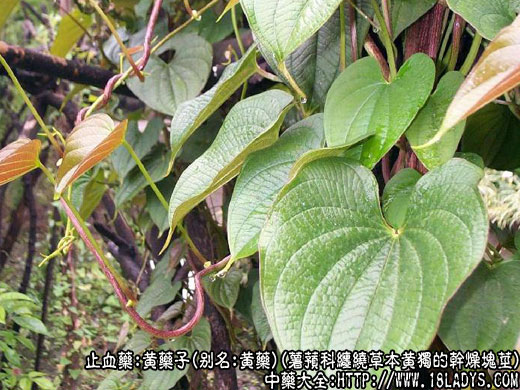
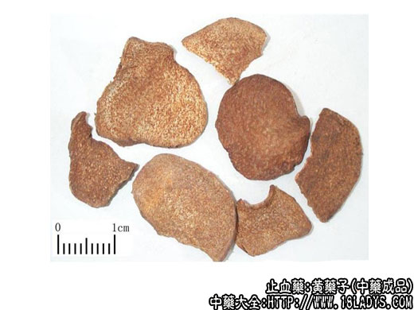
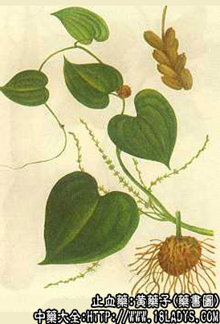

黄药子为少常用中药。始载《开宝本草》。
别名：黄药。
来源：为薯蓣科多年生缠绕草本植物黄独的干燥块茎。多为野生。河北、山东有栽培。
产地：主产于湖北、湖南、江苏、福建等地，长江以南各地均有分布。
性状鉴别：块茎多在产地趁鲜切成类圆形或长圆形的片，大小不等，直径3～7厘米，厚约0.5～1厘米。外皮棕黑色，有皱纹及多数棕黄色突起须根痕，有的具残留的细小须根。切面黄白至棕黄色，不平坦，密布呈橙黄色麻点。质硬而脆，易折断。断面黄白色，有粉性。气微，味苦。
以片大，外皮棕黄色，断面黄白色，有粉性。气微，味苦。
以片大，外皮棕黑色，断面黄白色，显麻点者为佳。
主要成分：含鞣质、萜类化合物。
药理作用：凉血降火、散瘀解毒。体外试验对伤寒杆菌、肠炎杆菌、宋内氏痢疾杆菌、肺炎双球菌等有抑制作用。又其水浸液对黄色毛癣菌等多种皮肤真菌有不同程度抑制作用。
炮制：生用。
性味：苦、平，有小毒。
归经：入心、肺经。
功能：清热解毒、消肿、凉血、止血。
主治：甲状腺状，咳血、吐血、子宫出血、痈肿疮毒、虫蛇咬伤（内服、外敷均可）。
临床应用：1、治甲状腺肿。以单味水煎，或酒煎服，或用其流浸膏；又可配夏枯草等，能改善临床症状。
2、试用黄花子酒治疗肿瘤，尤其食管癌有一定作用。对治疗神经纤维瘤，横纹肌肉瘤有一定帮助，但动物实验尚未能证实有抗肿瘤作用。
3、疮疡肿毒、蛇害、犬咬伤，可用鲜品捣烂外敷。
使用注意：本品内服有时可能会对肝功能产生不良影响，故长期用药者，应注意观察肝功能变化。
用量：3～12g，治癌症用至30g。
处方举例：黄药子酒：将黄药子300g，62度白酒1.5kg，置陶罐内封口，陶罐放入水锅内，慢火煮2小时，取出陶罐，稍冷却即放入冷水中，经七天七夜后取出，过滤去渣。即得黄药子酒。一日量50～100毫升，分少量多次服。
注：本草文献记载的黄药子，不止一种。除上述品种外，陕西使用蓼科植物朱砂七的块根作黄药子。该省个别地区尚有以本品作红药子药用的，其块根外形似何首乌，常横切成片或块状，大小不一，外皮棕褐色，有突起支根痕或被火燎焦的支根。切面黄褐色，粗糙，纤维束散列，纵横交错。质坚硬。折断面显淀粉性。味微苦涩。效用：理气止痛、活血、止血。